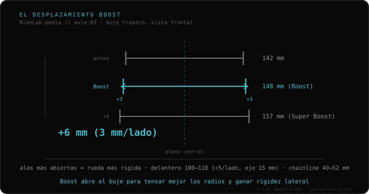

Boost 110 é o padrão de cubo dianteiro de montanha moderno. Mede 110 mm de largura, 10 mm mais que o 100 clássico (5 mm por lado), e usa eixo passante de 15 mm. Como no traseiro, separar as flanges do cubo abre o ângulo dos raios e deixa a roda dianteira mais rígida, além de dar espaço a pneus largos. Anda junto com o Boost 148 traseiro: ambos formam o «pacote» Boost. Não é compatível com garfos de 100 mm sem um kit de conversão.
É o par dianteiro do Boost 148: o garfo se alarga 10 mm para que a roda de 29 não flexione.
A lógica é idêntica à do traseiro: mais largura entre as flanges do cubo = raios num triângulo mais amplo = roda mais rígida. No dianteiro o salto é de 10 mm (5 por lado) porque parte de 100. O eixo continua sendo de 15 mm de diâmetro, o habitual em garfos de montanha.

Encaixa só em garfos Boost de 110 mm. Não entra em garfos de 100 mm. Um cubo de 100×15 dá para adaptar a um garfo de 110 com um kit de conversão (duas tampas de +5 mm e reposicionar o disco), mas não é o ideal.
Se você não sabe qual eixo, largura ou rosca usa o seu quadro, mande o caso. Diagnóstico real, sem te vender nada. Fale conosco no WhatsApp
Não. São larguras distintas; o garfo deve ser de 110 mm. Um cubo de 100 dá para adaptar a 110 com kit de conversão, não o contrário sem cortar.
Sim, o habitual em montanha. O que muda em relação ao 100×15 é a largura do cubo (110 vs 100 mm), não o diâmetro.
Sim: são o par dianteiro e traseiro do mesmo padrão Boost. Uma bike Boost normalmente leva 110 na frente e 148 atrás.